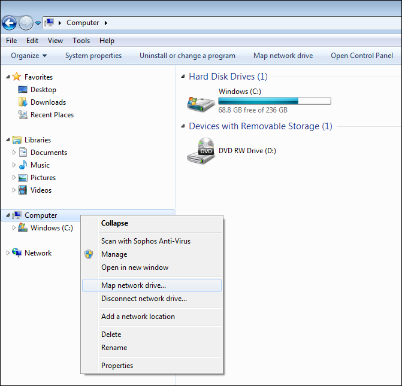
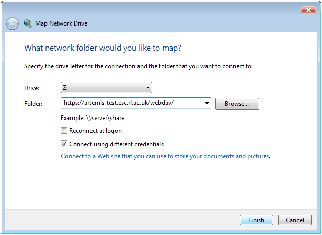
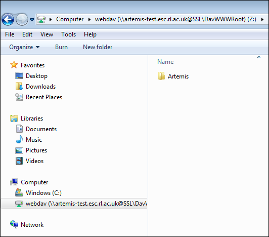

Windows 7 and 8.1
With a 'Windows Explorer' file browser open right-click on 'Computer' (Windows 7) or 'This PC' (Windows 8.1) or 'Network' in the left hand navigation pane then select 'Map network drive...'
Insert https://artemis-test.esc.rl.ac.uk/webdav/ into the 'Folder'
Click 'Connect using different credentials'
Click 'Finish'
Enter your login details into the login box
- For Facility Users this is the email address and password which you used to register with the STFC Facilities User Office.
- For Artemis admin users this is your STFC Federal ID (no prefix required) and password.
Click 'Remember my credentials' if you are logged into Windows using a personal account and want to connect to this file server again in the future.
DO NOT select it if you are using a shared computer or logged into Windows using some kind of shared "guest" account.

If the login is successful then you will see the top level 'Artemis' folder as shown below.
Navigate into the Artemis folder and you will see a folder for each experiment which you are associated with.
